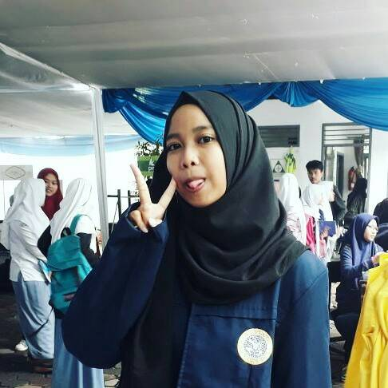
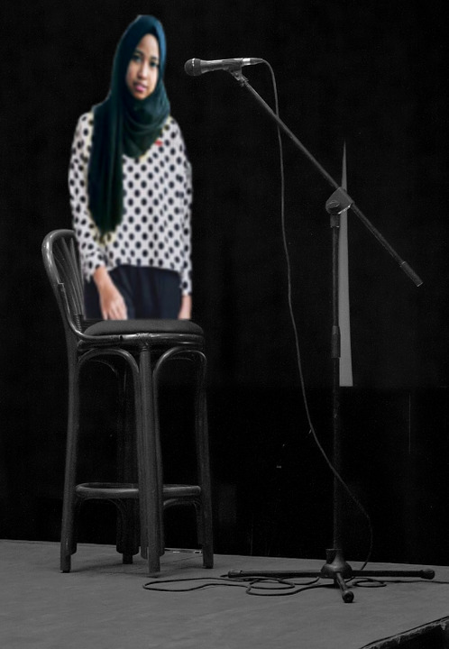

PEMBUKAAN DIRI
HA A EL EL O!!! HALLO!!! Paragraf pertama dalam pembukaan diri kali ini akan diisi dengan perkenalan, tak kenal maka tak sayang, tak sayang maka tak rindu,tak rindu maka tak ada kata rindu itu berat, sebelum rindu alangkah baiknya kenalan dulu yaa.. Nama saya LULU ALINA RAMADHANI RUSMAWAN biasa dipanggil Lulu. Alamat rumah di KOMP.ABRI SUKASARI No.49. Tanggal lahir 16 Desember 1999.. TUA IYA SIH.
ISI DARI HOBI
Hobby pertama adalah menyanyi. Jadi sedikit cerita ya, jadi gini waktu SD lulu sering banget nyanyi-nyanyi gitu sampe akhirnya disuruh sama orang tua bukan ikut idola cilik dan akhirnya lulu daftar dan ikut audisi tapi lulu gak masuk di babak selanjutnya dan gak mau ikutan audisi lagi. Tapi hobinya masih berjalan sampe sekarang
Hobby kedua adalah traveling kemana-mana, selagi ada waktu dan ada uang kemana pun jadi . ANTI WACANA-WACANA CLUB